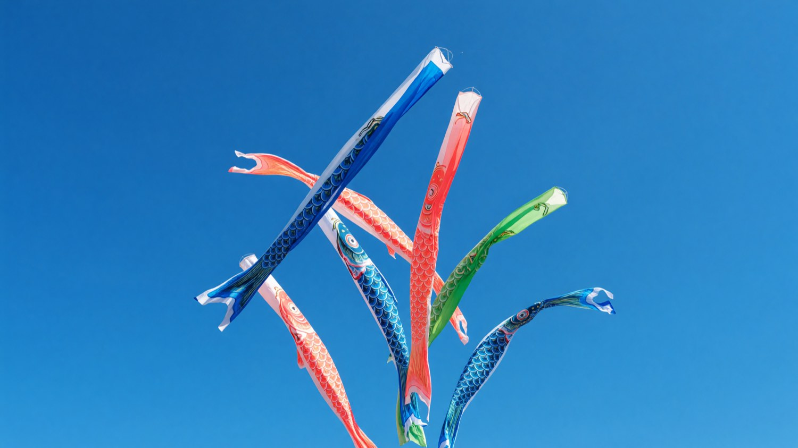

Philosophy
Every team has a direction. Nobori makes it visible.
"We stopped asking 'what are we working on?' and started asking 'what's rising?' The language changed the culture."Mika Tanaka, VP Engineering at Kinto
Like koinobori streamers that mark a family's hopes for their children, Nobori makes your team's ambitions concrete and visible. Goals connect to daily work. Progress is not a chart — it's a story.